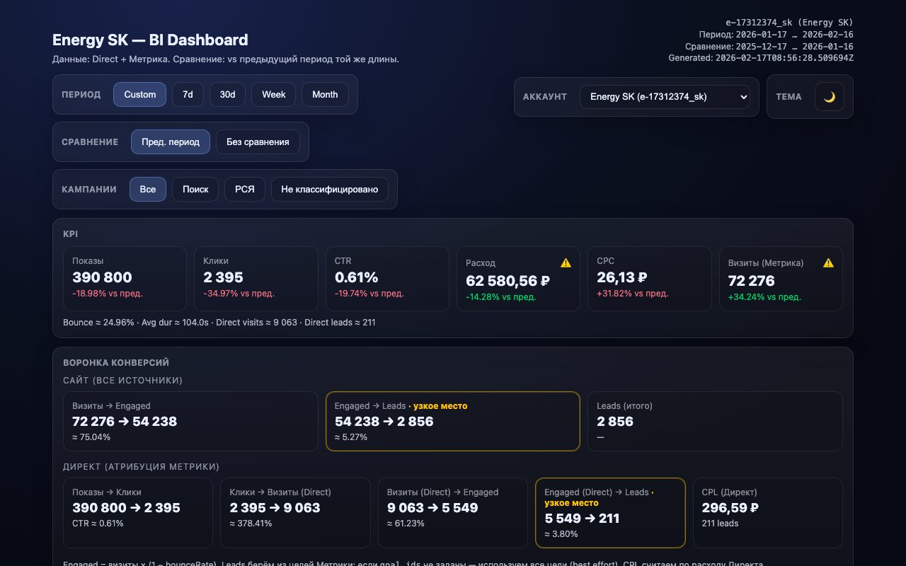

LLM-аналитика для Яндекс.Директа
Open-core MCP-сервер для Yandex Direct + Metrica + Wordstat + Audience.
Используйте большие модели (Claude/GPT) или локальные модели — и держите данные, гипотезы и решения под контролем.
Проект не аффилирован с Яндексом и не поддерживается Яндексом.
Yandex, Yandex.Direct, Yandex.Metrica, Yandex Wordstat, Yandex Audience — торговые марки соответствующих правообладателей.
Что вы получаете
Это "данные + плейбуки": raw-выгрузки для анализа, HF-пресеты для скорости, дашборды для стейкхолдеров и (в PRO) BI-датасеты + контролируемые изменения через plan/apply.
Direct
- Raw-отчёты + чтение сущностей
- HF find/get/report пресеты
- PRO: plan/apply (guarded)
Metrica
- Raw-отчёты + Logs API exports
- HF пресеты отчётов
- PRO: CRUD целей (guarded)
Wordstat + Audience
- Спрос/семантика и расширение ключей
- Сегменты: каталог/пересечения/perf proxy
- Опциональные блоки в дашборде
Dashboard Option 1
Один вызов → самодостаточный HTML + JSON, включая multi-account режим.
BI Option 2 · PRO
Всё из Public, плюс:
NDJSON-friendly датасеты + инкрементальный cursor-sync для витрин, BI и воспроизводимых пайплайнов.
- Поставляется отдельным приватным PRO plug-in
dashboard.schema+dashboard.dataset.*dashboard.sync.start/dashboard.sync.next- Chunking + per-day лимиты для тяжёлых датасетов
Демо
Эти страницы можно показывать клиентам без каких-либо ключей/доступов.
Живой дашборд (реальные данные)
Один вызов → самодостаточный интерактивный HTML-дашборд с KPI, воронкой, алертами и анализом кампаний.

Установка (Claude Code + Docker)
Public — read-only и safe-by-default. PRO — отдельный артефакт, который обычно распространяют приватно (подписка).
Автоматическая настройка
Интерактивный мастер создаст .env, accounts.json
и зарегистрирует MCP-сервер для вашего клиента
(Claude Code, Claude Desktop, Cursor, Codex CLI, OpenCode, Gemini CLI):
python3 scripts/setup.pyPython 3.10+, без зависимостей. Или выполните ручные шаги ниже.
Public (read-only)
Рекомендуемый вариант:
claude mcp add yandex-direct-metrica-mcp -- \
docker run --rm -i \
--env-file /path/to/your/.env \
-e MCP_ACCOUNTS_FILE=/data/accounts.json \
-v /path/to/your/state:/data \
ghcr.io/<owner>/yandex-direct-metrica-mcp:latestСовет: ставьте date_to как вчера (данные за "сегодня" часто неполные).
PRO (отдельный артефакт)
GHCR-пакет держите приватным (для платных подписчиков):
claude mcp add yandex-direct-metrica-mcp-pro -- \
docker run --rm -i \
--env-file /path/to/your/.env \
-e MCP_ACCOUNTS_FILE=/data/accounts.json \
-v /path/to/your/state:/data \
ghcr.io/<owner>/yandex-direct-metrica-mcp-pro:latest
Writes в PRO всё равно требуют явных guardrails: MCP_WRITE_ENABLED, HF_WRITE_ENABLED, sandbox-only политика и (опционально) two-phase confirm.
PRO: BI + управляемые изменения
PRO — для тех, кому нужен воспроизводимый контур: хранить артефакты, синкать датасеты в BI и безопасно вносить изменения (plan → review → apply) под явными флагами.
Guardrails (writes)
- Public edition форсирует read-only даже при ошибочных env
- Writes только под явными флагами включения
- Рекомендуем sandbox-only по умолчанию
- Опционально: two-phase confirm (
write.confirm)
Цель: сделать "случайные записи" существенно менее вероятными.
Что показывать клиентам
- Авто-дашборды + лёгкие алерты (skills)
- BI sync в витрину/warehouse (cursor + NDJSON)
- Плейбуки запуска кампаний: diagnose → plan → apply → measure
- Артефакты: evidence, deltas, решения
Чтобы запросить PRO — откройте issue или свяжитесь через GitHub.